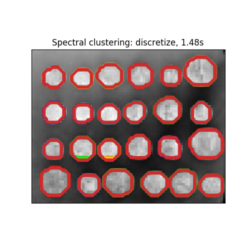

Note
Click here to download the full example code or run this example in your browser via Binder
Segmenting the picture of greek coins in regions¶
This example uses Spectral clustering on a graph created from voxel-to-voxel difference on an image to break this image into multiple partly-homogeneous regions.
This procedure (spectral clustering on an image) is an efficient approximate solution for finding normalized graph cuts.
There are two options to assign labels:
with ‘kmeans’ spectral clustering will cluster samples in the embedding space using a kmeans algorithm
whereas ‘discrete’ will iteratively search for the closest partition space to the embedding space.
print(__doc__)
# Author: Gael Varoquaux <gael.varoquaux@normalesup.org>, Brian Cheung
# License: BSD 3 clause
import time
import numpy as np
from distutils.version import LooseVersion
from scipy.ndimage.filters import gaussian_filter
import matplotlib.pyplot as plt
import skimage
from skimage.data import coins
from skimage.transform import rescale
from sklearn.feature_extraction import image
from sklearn.cluster import spectral_clustering
# these were introduced in skimage-0.14
if LooseVersion(skimage.__version__) >= '0.14':
rescale_params = {'anti_aliasing': False, 'multichannel': False}
else:
rescale_params = {}
# load the coins as a numpy array
orig_coins = coins()
# Resize it to 20% of the original size to speed up the processing
# Applying a Gaussian filter for smoothing prior to down-scaling
# reduces aliasing artifacts.
smoothened_coins = gaussian_filter(orig_coins, sigma=2)
rescaled_coins = rescale(smoothened_coins, 0.2, mode="reflect",
**rescale_params)
# Convert the image into a graph with the value of the gradient on the
# edges.
graph = image.img_to_graph(rescaled_coins)
# Take a decreasing function of the gradient: an exponential
# The smaller beta is, the more independent the segmentation is of the
# actual image. For beta=1, the segmentation is close to a voronoi
beta = 10
eps = 1e-6
graph.data = np.exp(-beta * graph.data / graph.data.std()) + eps
# Apply spectral clustering (this step goes much faster if you have pyamg
# installed)
N_REGIONS = 25
Out:
Visualize the resulting regions
for assign_labels in ('kmeans', 'discretize'):
t0 = time.time()
labels = spectral_clustering(graph, n_clusters=N_REGIONS,
assign_labels=assign_labels, random_state=42)
t1 = time.time()
labels = labels.reshape(rescaled_coins.shape)
plt.figure(figsize=(5, 5))
plt.imshow(rescaled_coins, cmap=plt.cm.gray)
for l in range(N_REGIONS):
plt.contour(labels == l,
colors=[plt.cm.nipy_spectral(l / float(N_REGIONS))])
plt.xticks(())
plt.yticks(())
title = 'Spectral clustering: %s, %.2fs' % (assign_labels, (t1 - t0))
print(title)
plt.title(title)
plt.show()
- 
Out:
Spectral clustering: kmeans, 1.86s
Spectral clustering: discretize, 1.61s
Total running time of the script: ( 0 minutes 4.215 seconds)